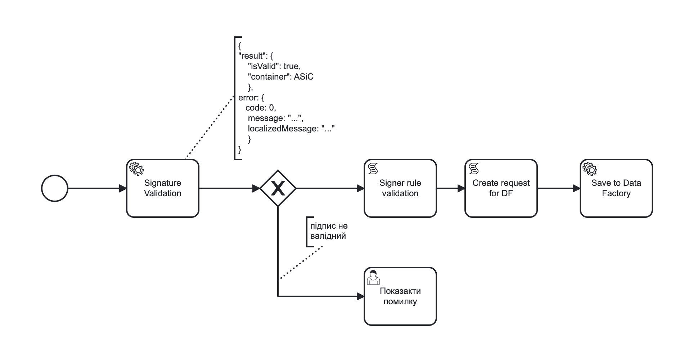
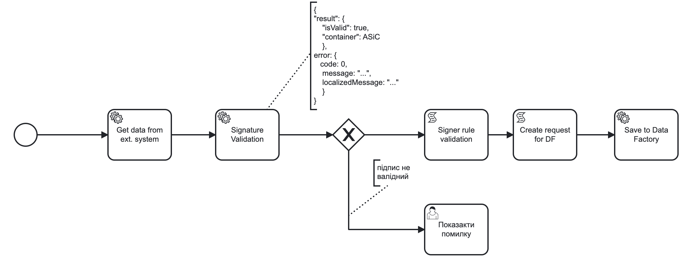

Verifying QES signature and signer in API-received business process content
| 🌐 This document is available in both English and Ukrainian. Use the language toggle in the top right corner to switch between versions. |
- 1. General description
- 2. Functional scenarios
- 3. User Roles
- 4. General provisions
- 5. Glossary and acronyms
- 6. Modeling examples
- 7. Delegate for validation
- 8. signature_details(<string|data>, <enum|dataFormat>)
- 9. signature_content((<string|data>, <enum|dataFormat>)
- 10. Updating IIT library
- 11. High level development plan
- 12. Technical expertise
- 13. Development Plan
1. General description
When integrating with third-party systems at the business process level, there is a need to work with signed files that are downloaded or transferred to a business process by these systems. Namely, there is a need to ensure the integrity of these files by checking the QES applied to these files. Get information about the signatory for further processing or entry into registers. There is also a need to view the contents of container files.
2. Functional scenarios
-
Verification of data integrity by validating the signature indicating the container type.
-
Getting information about all data signatories.
-
Getting content from a signed data array.
3. User Roles
-
Modeler
4. General provisions
-
Data is processed in the script-tasks of a business process.
-
Getting data from third-party sources outside of this design.
-
Byte data between systems is transmitted encoded using Base64.
-
The default format is CAdES-X-Long.
-
Data and signature in a given iteration always arrive in the same data array.
-
Implementation of different validation formats outside of this design.
-
Signing files outside of this design.
-
Implementation of algorithms for working with signatures undergoes using the
IITlibrary.
5. Glossary and acronyms
Container is the resulting file type. The following containers are distinguished: XAdES (xml), PAdES (pdf), CAdES (p7s), ASiC (asic). The most modern and recommended is the ASiC container type.
ASiC: a feature of this container is that it is built as an archive for storing files, and the only one from the listed ones allows you to store several files in different formats.
Format is an algorithm used for data signing (XAdES-B-LT/CAdES-X-Long/CAdES-BASE/PAdES-B-LT). The recommended format is CAdES-X-Long.
Signature type: THere are two types of signatures: separated (detached) and enveloped (embedded).
| The file and data terms in this design are interchangeable. |
6. Modeling examples
6.1. An example of a BP simulation with an ASiC container as an input parameter that contains several files

def formData = submission('start_event').formData
def file = formData.prop('signed_data').value()
def allSignInfo = signature_details(file, SignFormat.ASiC).getAllSignInfo()
for (signInfo in allSignInfo) {
if (signInfo.subjDRFOCode == null) {
println "DRFO should be present"
}
}
def allFiles = get_content(file, SignFormat.ASiC).getAllContent()
for (singleFile in allFiles) {
set_variable(singleFile.getReference(), singleFile.getReferenceData())
}6.2. Example of a BP modeling to get a p7s container with an embedded signature as part of the data from an external API

{
"name": "Ololow",
"day-of-birth": "01/01/01",
"request": "dGVzdCBkYXRh",
"request_received": "20/02/14"
}def containerType = validationResult.prop('container').value()
def info = signature_details(request, containerType).getSignInfo()
if (info.subjDRFOCode == null) {
println "DRFO should be present"
}
originRequestDate = signature_content(request, containerType).getContent().getData()
def requestBytes = Base64.decode(originRequestDate)
save_digital_document(requestBytes, 'request.pdf')
set_variable('fileContent', originRequestDate)7. Delegate for validation
7.1. Delegate parameters
| Parameter | Description | Type | Data type |
|---|---|---|---|
data |
Data containing a signature in Base64 format |
Input |
String |
container |
List of available file types |
Input |
Enum (ASiC/CAdES) |
result |
Validation result |
Output |
ValidatioResult |
7.2. REST API
POST /api/esignature/validate
{
"data": "dGVzdCBkYXRh",
"container": "CAdES/ASiC/XdES/..."
}| Json Path | Type | Description |
|---|---|---|
$result.isValid |
boolean |
Result of data validation |
$result.container |
String |
Container type |
$.error.code |
String |
Corresponding status code |
$.error.message |
String |
Error details and description |
$.error.localizedMessage |
String |
Localized details and error description |
7.3. Low-level design
To validate the signatures of ASiC containers, the number of signatories is obtained using EndUser::ASiCGetSignsCount(base64Data), and then the validity of each EndUser::ASiCVerify(index, base64Data) is checked.
EndUser::VerifyInternal(base64Data) is used for CAdES.
8. signature_details(<string|data>, <enum|dataFormat>)
8.1. JUEL function
| Parameter | Description | Type | Data type |
|---|---|---|---|
data |
Data containing signature in Base64 format |
Input |
String |
container |
List of available file types |
Input |
Enum (ASiC/CAdES) |
signInfo |
Signature details |
Output |
SignatureInfo |
| Json Path | Type | Description |
|---|---|---|
issuer |
String |
Certificate issuer |
issuerCN |
String |
Certificate issuer name |
serial |
String |
Certificate serial number |
subject |
String |
General information about the certificate owner |
subjCN |
String |
Certificate owner name |
subjOrg |
String |
Organization of the certificate owner |
subjOrgUnit |
String |
Unit of the certificate owner |
subjTitle |
String |
Position of the certificate owner |
subjState |
String |
Certificate owner region/province |
subjLocality |
String |
Signatory locale |
subjFullName |
String |
Signatory full name |
subjAddress |
String |
Signatory address |
subjPhone |
String |
Signatory phone number |
subjDNS |
String |
DNS or other name of a device |
subjEDRPOUCode |
String |
Signatory EDRPOU |
subjDRFOCode |
String |
Signatory DRFO |
8.2. REST API
POST /api/esignature/info
{
"data": "dGVzdCBkYXRh",
"container": "CAdES/ASiC/XdES/..."
}| Json Path | Type | Description |
|---|---|---|
$.info[] |
array[SignatureInfo] |
Data array containing details about each signature |
$.error.code |
String |
Corresponding status code |
$.error.message |
String |
Error details and description |
$.error.localizedMessage |
String |
Localized description |
8.3. Low-level design
For data in ASiC format, it is possible to put several signatures, therefore, when receiving information about a signature, an array with details about each signature on the data is returned.
IntStream.rangeClosed(0, endUser.ASiCGetSignsCount(data))
.mapToObj(index -> endUser.ASiCVerify(index, data))
.collect(Collectors.toList());For CAdES data, EndUser::VerifyInternal(base64Data) is used, and the details from the 'EndUserSignInfo' object are returned as a single element in the array.
9. signature_content((<string|data>, <enum|dataFormat>)
9.1. JUEL function
| Parameter | Description | Type | Data type |
|---|---|---|---|
data |
Data containing signature in Base64 format |
Input |
String |
container |
List of available file types |
Input |
Enum (ASiC/CAdES) |
response |
Object with data |
Output |
SignData |
9.2. REST API
POST /api/esignature/content
{
"data": "dGVzdCBkYXRh",
"container": "CAdES/ASiC/XdES/..."
}| Json Path | Type | Description |
|---|---|---|
$.content[] |
array[Content] |
Container contents |
$.error.code |
String |
Corresponding status code |
$.error.message |
String |
Error details and description |
$.error.localizedMessage |
String |
Localized details and error description |
9.3. Low-level design
For an ASiC container, EndUser::ASiCGetSignReferences(index, base64Data) is used to get a list of all files in a container for each index, and EndUser::ASiCGetReference(reference) is used to get the content.
For CAdES containers, the data is a part of the EndUser::VerifyInternal(base64Data)::GetData() output parameter.
10. Updating IIT library
-
The crypto library is provided as a link to the https://iit.com.ua/download/EUSignCP-Java-20230629.zip archive.
-
The archive with library consists of the folders:
-
Documentation: Up-to-date documentation for the current version of the crypto library.
-
Modules and\or Installs: Up-to-date modules and\or installation packages of the current version of the crypto library.
-
Usage: A real example of the crypto library usage. The documentation includes a manual for a system programmer (contains general information on the library: how to connect, configure and use the library), and an application (contains a description of functions and parameters).
-
-
Updates containing non-critical improvements can be provided upon request to supp@iit.com.ua (in the letter it is necessary to indicate the number of the actual technical support contract). We inform you about critical updates by mail, to the address specified in the contacts for your organization.
12. Technical expertise
-
BE (java)
13. Development Plan
-
IIT library update.
-
Extension of DSO with appropriate integration points.
-
Creation of a delegate for validation.
-
Adding JUEL functions.
-
Adding a utility function for Base64 encoding and decoding.
-
Development of reference examples.